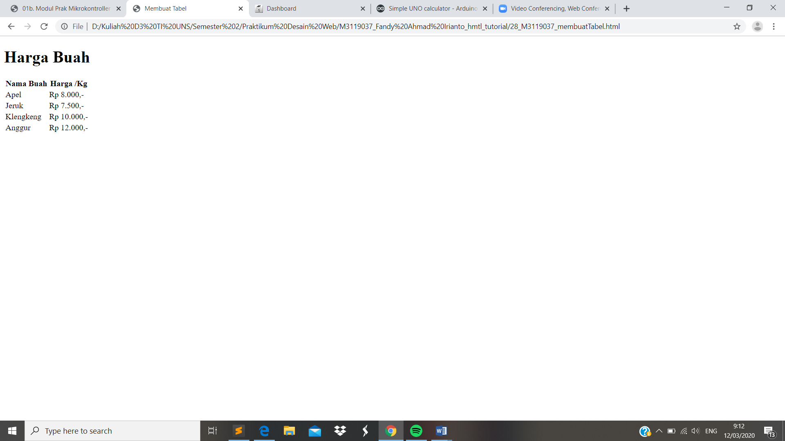

Membuat Tabel
//Tabel merupakan sebuah data dalam bentuk grid yang terdiri dari kolom, baris dan cell. Untuk membuat tabel kita perlu beberapa tag. Tag pertama yang kita gunakan adalah tag < table > dan diakhiri dengan tag < / table >, tag ini digunakan untuk memulai sebuah tabel. Tag kedua yang kita gunakan adalah tag < tr > dan diakhiri dengan < / tr > digunakan untuk membuat baris dari tabel. Tag ketiga yang kita gunakan adalahtag < td > dan diakhiri dengan < / td >digunakan untuk menginput data ke tabel. Sedangkan tag < th > digunakan untuk membuat judul sebuah table seperti nomer dan nama.
Codingan
<!DOCTYPE html>
<html>
<head>
<meta charset="UTF-8">
<title> Membuat Tabel</title>
</head>
<body>
<h1>Harga Buah </h1>
<table>
<tr>
<th>Nama Buah </th>
<th>Harga /Kg</th>
</tr>
<tr>
<td>Apel</td><td>Rp 8.000,-</td>
</tr>
<tr>
<td>Jeruk</td><td>Rp 7.500,-</td>
</tr>
<tr>
<td>Klengkeng</td><td>Rp 10.000,-</td>
</tr>
<tr>
<td>Anggur</td><td>Rp 12.000,-</td>
</tr>
</table>
</body>
</html>
Tampilan Hasil Percobaan

Kesimpulan
Pada percobaan membuat tabel kali ini dapat disimpulkan bahwa tabel yang dihasilkan masih sangat poloh dengan susuan tanpa garis dan sederhana.